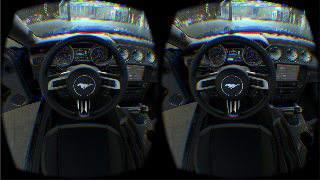

The first references to virtual reality came from science fiction. Stanley G. Weinbaum's 1935 short story "Pygmalion's Spectacles" describes a goggle-based virtual reality system with holographic recording of fictional experiences, including smell and touch. Virtual reality in modern meaning was popularized by Jaron Lanier through his company VPL Research, which held many of the mid-1980s VR patents.
Morton Heilig wrote in the 1950s of an "Experience Theatre" that could encompass all the senses in an effective manner, thus drawing the viewer into the onscreen activity. He built a prototype of his vision dubbed the Sensorama in 1962, along with five short films to be displayed in it while engaging multiple senses.
In 1990, Jonathan Waldern, a VR Ph.D, demonstrates "Virtuality" at the Computer Graphics 90 exhibition staged at London's Alexandra Palace. This new system was an arcade machine that would use a virtual reality headset to immerse players.
 Info found here!